To demonstrate how to set up and use third party visual reporting applications from Meddbase reports. This article will firstly explain the step by step process using the example report 'Appointments by Date' through Microsoft Excel which can also be followed when using other programmes such as Power BI & Tableau.
The following topics will be covered:
1. Microsoft Excel
2. Power BI
3. Tableau
It may be beneficial to create a new user in your Chamber which is used only for sharing reports. If you decide to do this, please note this user must be part of all Role Groups and be assigned the correct security certificates to access the data within the reports.
Microsoft Excel is part of the Microsoft 365 Office Suite.
As this is a 3rd party tool, Meddbase is unable to offer training or troubleshooting once you have loaded data into this tool.
Information and training from Microsoft can be found here.
Step 1 - Create the report in Meddbase. Note that these instructions will focus on the links to Microsoft Excel and not the creation of the reports in Meddbase. For those steps, please refer to the following Knowledge Base articles. Report Query Builder
Step 2 - From the Edit Query tab, copy the URL into the notepad that appears next to “Example URL”
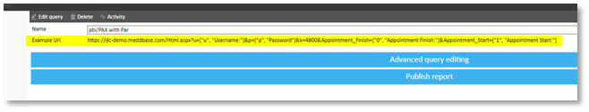
Step 3 - In a new excel workbook, create the below table and name it “Parameters”. The values populated are a combination of the Report User ID, as well as pieces from the link you saved in step 2.
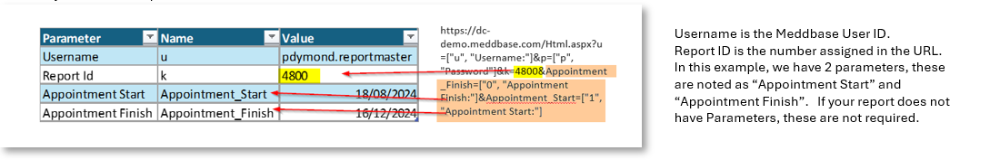
Step 4 - From the Data tab in the excel ribbon, select Get Data, From Other Sources and then Blank Query.
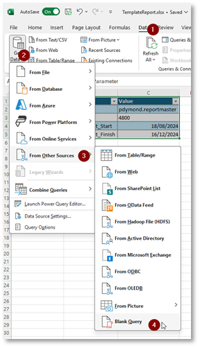
Step 5 - This will now open PowerQuery. In the formula bar, type the following:
= Excel.CurrentWorkbook(){[Name="Parameters"]}[Content]You will then see the Parameters table you had previously created.
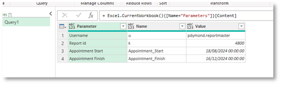
Step 6 - Right click on the Column “Parameter” and remove this column.
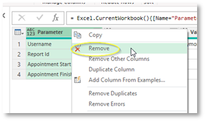
Step 7 - Right click on the Column “Value”, Change Type and then select Text.
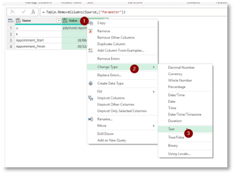
Step 8 - Right click on the previous step (in the Applied Steps) and select “Insert Step After”. In the formula box type the following:
= Table.ReplaceValue(#"Changed Type",null,"",Replacer.ReplaceValue,{"Value"})This will ensure no errors if your report contains optional parameters.
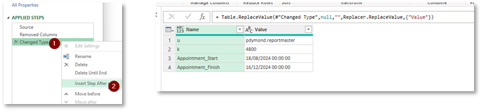
Step 9 - From the Transform tab, create a pivot table. For the Values column, ensure to select Value. From the Advanced Options, select “Don’t Aggregate”
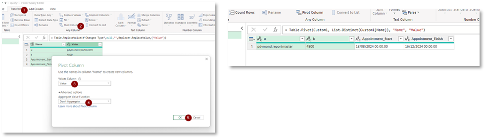
Step 10 - Similar to the step 8, Insert a new applied step. Input the following into the formula bar. Note the slight changes to your Chamber URL.
= Xml.Tables(Web.Contents("https://dc-demo.meddbase.com/default.aspx?"&Uri.BuildQueryString(#"Pivoted Column"{0}),[ApiKeyName = "p"]))Html.aspx has been changed to /default.aspx
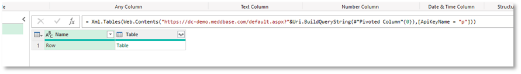
Step 11 - The first time this is done, you will be required to enter in the “Key”. Select Edit Credentials, and then enter in the password assigned to the User ID which will be accessing these reports.
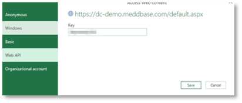
Step 12 - If this has worked correctly, you will now be able to expand your table and select the preferred columns.
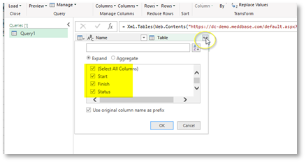
Step 13 - Once preferred columns have been chosen or manipulated, select “Close & Load” to view your results in Excel.
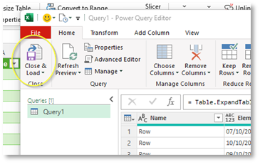
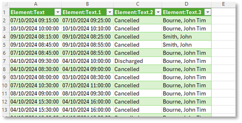
This report will not automatically refresh in Excel. The user must first hit the refresh button to see the latest data.
Power BI is a Microsoft Dashboarding tool. If you do not currently have this tool, you can find available plans and pricing here.
As this is a 3rd party tool, Meddbase is unable to offer training or troubleshooting once you have loaded data into this tool.
Training from Microsoft is available here.
The process of using Power BI is similar to the above steps using Microsoft Excel as it uses Power Query to pull data using the URL provided. A large difference here is that Power BI does not support dynamic parameters*, as this tool is strictly for providing output, and does not allow the end user to edit tables.
Step 1 - Create the report in Meddbase. Note that these instructions will focus on the links to Microsoft Power BI and not the creation of the reports in Meddbase. For those steps, please refer to the following Knowledge Base articles: Report Query Builder - Introduction and report examples
Step 2 - From the Edit Query tab, copy the URL into the notepad that appears next to “Example URL”
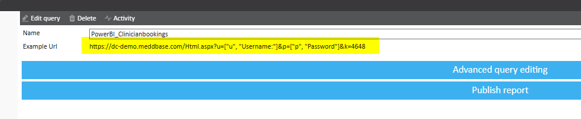
Step 3 - From the Data tab, select Blank Query.
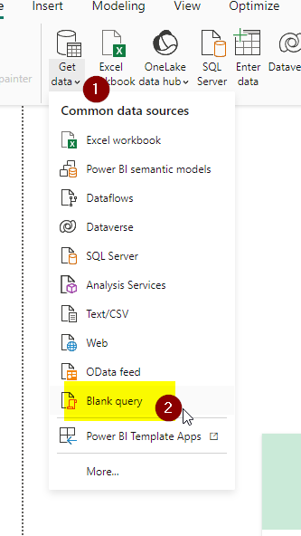
Step 4 - Very similar to excel, this will open a PowerQuery window. In the formula bar, type the following. Note the slight changes to your Chamber URL:
= Xml.Tables(Web.Contents("https://dc-demo.meddbase.com/default.aspx?u=pdymond.drdymond&k=4648", [ApiKeyName = "p"]))Html.aspx has been changed to /default.aspx
Step 5 - The first time this is done, you will be required to enter in the “Key”. Select Edit Credentials, and then enter in the password assigned to the User ID which will be accessing these reports.

Step 6 - If this has worked correctly, you will now be able to expand your table and select the preferred columns.
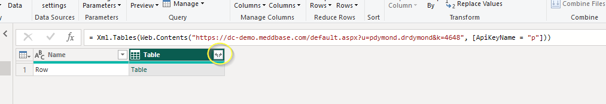
*If your report does have Parameters, create your report first in Excel (the first part of this Knowledge Base Article) and then once in Power BI, chose "Excel Workbook" as your data source.
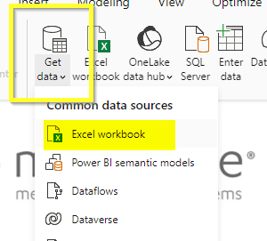
Tableau is a paid-for service which does not have a free option but does provide an initial 14 day trial. If you do use Tableau then once you have set up an account you can utilise data from many sources. Here is a list of connectors that can be used.
The commonly used method to connect your data in Tableau is through Microsoft Excel, connecting to .xls and .xlsx files. Here is a step by step guide on how to connect your data using Excel.
Once you have your data connected, you can begin to build a view of to explore your data, there will be some variables depending on your how data is structured. Here is a guide which outlines how to build a view of your data.
Tableau provide various resources on their website which can guide you through the process of setting up and using Tableau in more detail. You can also access a catalogue of training videos which can be found here, to view these, you need to be signed in but do not have to have a paid subscription.
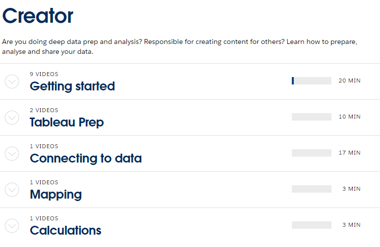